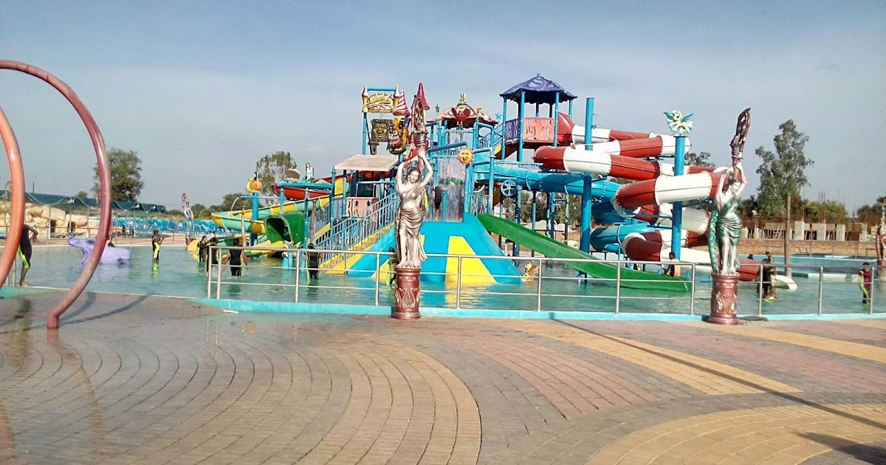
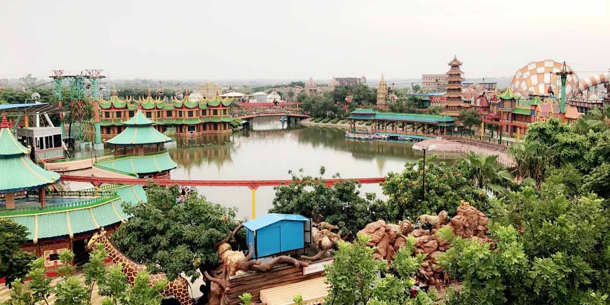

|
Blue World Theme Park is Kanpur’s first mega themed entertainment destination promising
visitors from around the world the excitement of epic adventure zones in one location.
25 acres of land featuring over 25 rides and 10 gigantic slides including Dry Rides,
aquatic wonderland, 7D Theater, Sky dive and India’s biggest private musical fountain
and laser show. With the capacity to welcome more than 20,000 guests a day, the destination is featuring \ India’s first Chair Lift (Ropeway track) of 1,000 running feet along with a turning angle too, a unique array of adrenaline-pumping roller coasters, thrill rides, and umpteen exclusive themes have been set up like European bringing you the view of London street, Roman featuring all the patrons from ancient times, Chinese with china town and china tower as major attraction, Egyptian attracting with a sequence of soldiers from medieval age, Mayan culture portrayed in the forms of sculptures, Fairy land awestruck view for kids, Jungle a small but astonishing view of the safari and finally the Indian Theme a glimpse of our heritage. Fairy Land Water World has spectacular attractions of more than 10 slides. Few amongst many are aqua funnel, tat pools, waterfall, wave pool etc. for the crowd of all ages. It has tried to equip all entertainment amenities in one canvas. Additionally, the destination is the home to a number of world-firsts, a variety of themed retail stores, exclusive dining venues with top notch facilities. Aquaria under water restaurant with affordable buffet. Also extends Volcano Café and Ship Restaurant with qualified professional staff. Located 2km away from Mandhana in Bithoor Road is set to be a must-visit destination, bringing the best of family entertainment to Kanpur’s growing leisure industry. |
  |